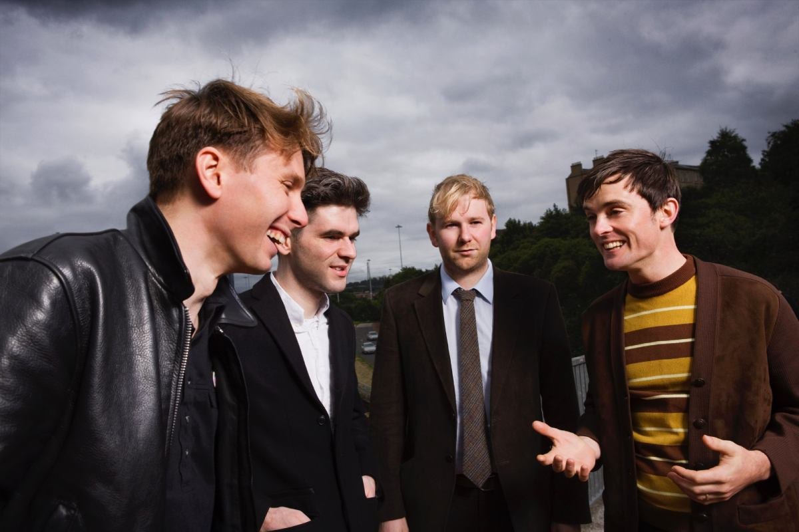

Франц Фердинанд

Образование группы
Franz Ferdinand — британская инди-рок-группа, образованная в 2002 году в Глазго.
В состав группы изначально входили Алекс Капранос (вокал, гитара, клавишные), Ник Маккарти (ритм-гитара, клавишные, бэк-вокал), Боб Харди (бас-гитара) и Пол Томсон (ударные).
Затем Маккарти в 2016 году временно покинул группу и был заменён на Дино Бардота (гитара) и Джулиана Корри (клавишные, синтезатор, гитара). Группа известна как одна из самых популярных
постпанк групп, попавших в топ-20 хитов Великобритании и продавших более 3 млн копий студийных альбомов. Они были номинированы на несколько «Грэмми» и получили две Brit Awards и NME Awards.
Происхождение названия
Группа названа в честь австрийского эрцгерцога Франца Фердинанда, убийство которого в Сараево в 1914 году стало поводом к началу Первой мировой войны.
По одним источникам, музыканты смотрели по телевизору трансляцию скачек, на которых одна из лошадей носила кличку Эрцгерцог, и вспомнили об австрийском эрцгерцоге.
По другой версии, поводом для выбора такого названия стала телетрансляция автогонок: "Один из нас, не помню уже кто, смотрел по ТВ гонки автомобилей «порше»,
и отметил поворот, который назывался «эрцгерцог» (archduke). Мы освежили наши знания истории и решили, что имя Франц Фердинанд было бы неплохим названием".
Стиль
Группу трудно отнести к какому-то одному стилю, что прослеживается даже в комментариях музыкантов о собственном творчестве. Так несмотря на награду Brit Awards в номинации «лучшая рок-группа», Капранос ранее заявлял, что считает Franz Ferdinand поп-группой:
"Мы исполняем самую настоящую поп-музыку. Она апеллирует прямо к природным инстинктам человека. Если ты покачиваешь ножкой под музыку — это уже поп. Nirvana играли поп-музыку. Sex Pistols и Velvet Underground делали то же самое".
Впрочем, у барабанщика Пола Томсона другое мнение на этот счёт: "Мы осознали, что Franz Ferdinand — все же не совсем поп-группа, поскольку мы не вписываемся в рамки правил, принятых в мире поп-музыки. Да, мы близки к этому миру, но всё же гуляем сами по себе".
Дискография
Franz Ferdinand (2003-2004)
К середине 2003 года известия о перспективной команде из Глазго дошли до Лондона: сразу несколько рекорд-лейблов предложили группе заключить контракт. Выбор музыкантов остановился на независимом лейбле «Domino Records» под руководством Лоуренса Белла.
Первый EP группы, «Darts of pleasure», вышел 8 сентября 2003 года и занял 44 строчку в британском чарте.мДебютный альбом под названием «Franz Ferdinand» был записан в Швеции, в городе Мальмё, под руководством продюсера Тора Йохансона,
работавшего ранее с «The Cardigans». Диск поступил в продажу 9 февраля 2004 года и получил восторженные отзывы критиков, благодаря чему группа стала быстро набирать популярность, в том числе за пределами Великобритании.
You Could Have It So Much Better (2005-2006)
В течение 2005 года Franz Ferdinand записывали свой второй альбом в Глазго и Нью-Йорке. Первоначально планировалось, что он будет называться «Franz Ferdinand 2», «Outsiders» либо вовсе не будет иметь названия, но в итоге музыканты остановились на названии
«You Could Have It So Much Better». Релиз диска состоялся 3 октября 2005 года. На создание обложки этого альбома музыкантов вдохновило творчество русских авангардистов (Алекс Капранос — бакалавр искусств, известный своим интересом к русскому авангарду),
в частности, Александра Родченко. При этом если для некоторых синглов «Franz Ferdinand» были сделаны вариации на тему отдельных работ Родченко и Эла Лисицкого, то обложка «You Could Have It So Much Better» представляет собой коллаж на основе знаменитого
портрета Лили Брик, сделанного Александром Родченко. Музыкальные критики тепло встретили альбом: кто-то считал его равным первому, кто-то — что он гораздо лучше дебютника. Он достиг первого места в британском и восьмого — в американском чарте.
Tonight: Franz Ferdinand (2007—2009)
26 января 2009 года Franz Ferdinand выпустили третий студийный альбом, получивший название «Tonight: Franz Ferdinand», который первоначально планировалось назвать, в честь одной из песен альбома — «Bite Hard». По словам Алекса Капраноса, пластинка
получилась более танцевальной, чем предыдущие работы группы, что отразилось в её названии: "В нем прослеживается отчётливое влияние диско. Хотя сами песни не обязательно выдержаны в этом стиле, они все же построены вокруг диско-бита".
Right Thoughts, Right Words, Right Action (2013)
В феврале 2010 группа анонсировала выход нового альбома. Алекс Капранос заявил, что все участники группы дали обещания самим себе не разглашать как идёт запись, потому как «это то, о чём я сожалел, когда выходил их предыдущий альбом».
Группа играла новые песни в ходе турне 2012 года. В марте 2013 Franz Ferdinand продолжили презентовать новые песни, в начале марта были сыграны «Evil Eye» и «Love Illumination», а в конце месяца свет увидела «Goodbye Lovers and Friends».
16 мая был официально анонсирован их 4 студийный альбом, наряду с названием, также были показаны трек-лист и обложка.
Always Ascending (2018)
Герои танцевального инди-рока продолжают высекать тот же танцевальный инди-рок, разве что прибавив к нему чуть больше электронных звуков. Всё благодаря продюсеру Филлипу Здару, который до этого работал с Cassius, Phoenix, Beastie Boys.
Дата релиза, была намечена на 9 февраля 2018 года.
Факты о группе
- Алекс Капранос, грек по отцу, вплоть до недавнего времени носил девичью фамилию матери, Хантли, во избежание дискриминации по национальному признаку.
- Ник МакКарти вырос в Мюнхене — поэтому в текстах песен Franz Ferdinand встречаются строчки на немецком, например, в песне «Darts of pleasure»: "Ich heisse Super-fantastisch!
Ich trinke Schampus mit Lachsfisch! Ich heisse Super-fantastisch!" Сам МакКарти комментирует это так: "Я — выходец из Мюнхена. Почти всю жизнь там прожил. Вот и вся наша связь с Германией, о которой вы спрашивали.
И немецкие словечки в песнях тоже, наверное, в мою честь."
- Связь творчества Franz Ferdinand с русским искусством XX века не исчерпывается дизайном обложек альбомов и синглов: песня «Love and Destroy» написана под впечатлением от романа Михаила Булгакова «Мастер и Маргарита», а именно от главы,
в которой Маргарита устраивает погром в квартире литературного критика Латунского.
Ссылки